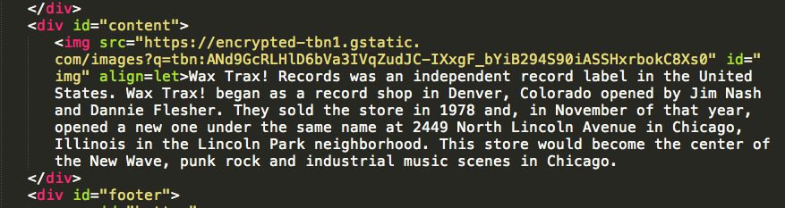

Wax Trax! Records was an independent record label in the United States. Wax Trax! began as a record shop in Denver, Colorado opened by Jim Nash and Dannie Flesher. They sold the store in 1978 and, in November of that year, opened a new one under the same name at 2449 North Lincoln Avenue in Chicago, Illinois in the Lincoln Park neighborhood. This store would become the center of the New Wave, punk rock and industrial music scenes in Chicago.
